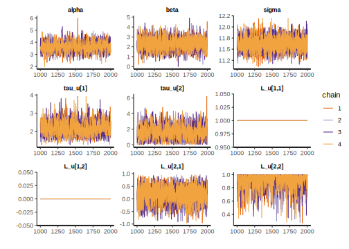
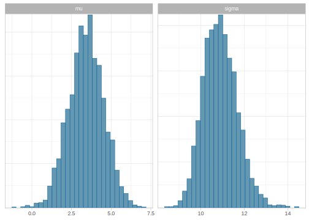

12.2 A first simple example with Stan: Normal likelihood
Let’s fit a Stan model to estimate the simple example given at the introduction of this chapter, where we simulate data from a normal distribution with a true mean of 3 and a true standard deviation of 10:
As we said before Stan code is organized in blocks. The first block indicates what is “data” for the model:
data {
int<lower = 1> N; // Total number of trials
vector[N] y; // Score in each trial
}Notice that one variable is of the type int (integer) and contains the number of trials. In addition to the type, some constraints can be indicated with lower and upper. In this case, N can’t be smaller than 1. These constraints serve as a sanity check; if they are not satisfied, we get an error and the model won’t run. The data are stored in a vector of length N, unlike R, vectors (and matrices and arrays) need to be defined with their dimensions. Notice that comments are indicated with // rather than #.
The next block indicates the parameters of the model:
parameters {
real mu;
real<lower = 0> sigma;
}The two parameters are real numbers, and \(\sigma\) (sigma) is constrained to be positive.
Finally, we indicate the prior distributions and likelihood functions in the model block:
model {
// Priors:
target += normal_lpdf(mu | 0, 20);
target += lognormal_lpdf(sigma | 3, 1);
// Likelihood:
for(i in 1:N)
target += normal_lpdf(y[i] | mu, sigma);
}It’s important to notice that target is not a regular variable, and every statement with target += adds terms to the unnormalized log posterior probability. We do this because adding to the unnormalized log posterior means to multiply a term in the numerator of the unnormalized posterior. As we explained before, Stan uses the shape of the unnormalized posterior to sample from the actual posterior distribution. See Box 12.1 for a more detailed explanation.
target do?
We can exemplify how target works with one hypothetical iteration of the sampler.
In every iteration where the sampler explores the posterior space, mu and sigma acquire different values (this is where Stan algorithm stops the movement of the particle in the Hamiltonian space). Say that in an iteration, mu = 5.305 and sigma = 10.224. Then the following happens in the model block:
- At the beginning of the iteration,
targetis zero. - The transformations that the sampler automatically does are taken into account. In our case, although
sigmais constrained to be positive in our model, inside Stan’s sampler it is transformed to an “unconstrained” space amenable to Hamiltonian Monte Carlo. That is, Stan samples from an auxiliary parameter that ranges from minus infinity to infinity, which is equivalent tolog(sigma). This auxiliary parameter is then exponentiated, when it is incorporated into our model. Because of this, an adjustment to the unnormalized posterior is required and added automatically (this adjustment is the log absolute value of the Jacobian determinant, which will be discussed in section ??). In this particular case, this adjustment is equivalent to addinglog(sigma) = 2.325totarget. - After
target + = normal_lpdf(mu | 0, 20);the log of the density of \(Normal(0,20)\) is evaluated at a given sample of mu (specifically 5.305) and this is added totarget. In R, this would bednorm(x = 5.305, mean = 0, sd = 20, log = TRUE), and thustargetshould be-3.95 + 2.325 = -1.625. - After
target += lognormal_lpdf(sigma | 3, 1), we add the log of the density of \(LogNormal(3, 1)\) evaluated at10.224to the previous value of the target. In R, this would bedlnorm(x = 10.224 , mean = 3, sd = 1, log = TRUE), and thustargetshould be-1.625 + -3.472 = -5.097. - After each loop of the last for-loop in the model block, we add to the target the log density of \(Normal( 5.305, 10.224)\) evaluated at each of the values of Y. In R, this would be to add
sum(dnorm(Y, 5.305, 10.224, log = TRUE))to the current value oftarget,-5.097 + -380.951 = -386.048.
This means that for the coordinates <mu = 5.305, sigma = 10.224>, the height of the unnormalized posterior would be the value of exp(target) = \(2.196\times 10^{-168}\). Incidentally, the value of target is returned as lp__ in an object storing a fit model with Stan.
It is possible to expose the value of target, by printing target() inside a Stan model. The value of target after each iteration is named lp__ in the Stan object. This can be useful to troubleshoot a problematic model.
Notice that we didn’t use curly brackets with the for-loop, this is a common practice if the for-loop has only one line, but brackets can be added and are obligatory if the for-loop spans over several lines.
It’s also possible to avoid the for-loop since many functions are vectorized in Stan:
model {
// Priors:
target += normal_lpdf(mu | 0, 20);
target += lognormal_lpdf(sigma | 3, 1);
// Likelihood:
target += normal_lpdf(y | mu, sigma);
}
NAThe complete model that we will fit looks as follows:
data {
int<lower = 1> N; // Total number of trials
vector[N] y; // Score in each trial
}
parameters {
real mu;
real<lower = 0> sigma;
}
model {
// Priors:
target += normal_lpdf(mu | 0, 20);
target += lognormal_lpdf(sigma | 3, 1);
// Likelihood:
target += normal_lpdf(y | mu, sigma);
}You can save the above code as normal.stan. Or alternatively, you can use the version stored in the package bcogsci. (?stan-normal provides some documentation for the model.)
Stan requires the data to be in a list object in R. Below we fit the model with the default number of chains and iterations.
lst_score_data <- list(y = Y, N = length(Y))
# Fit the model with the default values of number of
# chains and iterations: chains = 4, iter = 2000
fit_score <- stan(file = normal,
data = lst_score_data)
# alternatively:
# stan(file = "normal.stan", data = lst_score_data)We can inspect how well the chains mixed. The chains for each parameter should look like a “fat hairy caterpillar”; see section 3.1.1.1.2 for a brief discussion of convergence.

We can see a summary of the posterior by “printing” the model’s fit or plotting it. The summary displayed by print includes means, standard deviations (sd), quantiles, Monte Carlo standard errors for the mean of the posterior (se_mean), split Rhats, and effective sample sizes (n_eff). The summaries are computed after removing the warmup and merging together all chains. Notice that the se_mean is unrelated to the se of an estimate in the parallel frequentist model. Similarly to a large effective sample size, small Monte Carlo standard errors indicate an “efficient” sampling procedure: with a large value of n_eff and a small value for se_mean we can be relatively sure of the reliability of the mean of the posterior (Vehtari, Gelman, et al. 2019).28
## Inference for Stan model: normal.
## 4 chains, each with iter=2000; warmup=1000; thin=1;
## post-warmup draws per chain=1000, total post-warmup draws=4000.
##
## mean se_mean sd 2.5% 25% 50% 75% 97.5% n_eff Rhat
## mu 3.42 0.02 1.10 1.3 2.71 3.42 4.17 5.55 3407 1
## sigma 10.90 0.02 0.78 9.5 10.35 10.86 11.40 12.56 2638 1
##
## Samples were drawn using NUTS(diag_e) at Fri Jan 8 22:29:03 2021.
## For each parameter, n_eff is a crude measure of effective sample size,
## and Rhat is the potential scale reduction factor on split chains (at
## convergence, Rhat=1).After transforming the stanfit object into a data frame, it’s possible to provide summary plots. The package bayesplot (Gabry and Mahr 2019) is a wrapper around ggplot2 (Wickham, Chang, et al. 2019) and has several convenient functions to plot the samples. Bayesplot functions for posterior summaries start with mcmc_:

There are also several ways to get the samples for other summaries or customized plots, depending if we want a list, a data frame, or an array.
## List of 3
## $ mu : num [1:4000(1d)] 5.3 4.41 4.25 5.1 1.52 ...
## ..- attr(*, "dimnames")=List of 1
## .. ..$ iterations: NULL
## $ sigma: num [1:4000(1d)] 10.22 9.46 11.08 10.5 10.45 ...
## ..- attr(*, "dimnames")=List of 1
## .. ..$ iterations: NULL
## $ lp__ : num [1:4000(1d)] -386 -386 -384 -385 -386 ...
## ..- attr(*, "dimnames")=List of 1
## .. ..$ iterations: NULL## 'data.frame': 4000 obs. of 3 variables:
## $ mu : num 5.305 5.105 2.072 0.992 3.328 ...
## $ sigma: num 10.2 10.4 12.3 10.6 10.6 ...
## $ lp__ : num -386 -385 -386 -387 -384 ...## num [1:1000, 1:4, 1:3] 5.305 5.105 2.072 0.992 3.328 ...
## - attr(*, "dimnames")=List of 3
## ..$ iterations: NULL
## ..$ chains : chr [1:4] "chain:1" "chain:2" "chain:3" "chain:4"
## ..$ parameters: chr [1:3] "mu" "sigma" "lp__"References
Gabry, Jonah, and Tristan Mahr. 2019. Bayesplot: Plotting for Bayesian Models. https://CRAN.R-project.org/package=bayesplot.
Vehtari, Aki, Andrew Gelman, Daniel Simpson, Bob Carpenter, and Paul-Christian Bürkner. 2019. “Rank-Normalization, Folding, and Localization: An Improved \(\widehat{R}\) for Assessing Convergence of Mcmc.”
Wickham, Hadley, Winston Chang, Lionel Henry, Thomas Lin Pedersen, Kohske Takahashi, Claus Wilke, Kara Woo, and Hiroaki Yutani. 2019. Ggplot2: Create Elegant Data Visualisations Using the Grammar of Graphics. https://CRAN.R-project.org/package=ggplot2.
We simplify the output of
printin the text after this call, by actually callingsummary(fit, pars = pars, probs = c(0.025, 0.975))$summary.↩